How to Rap
Part 1 of 3: Learning the Basics
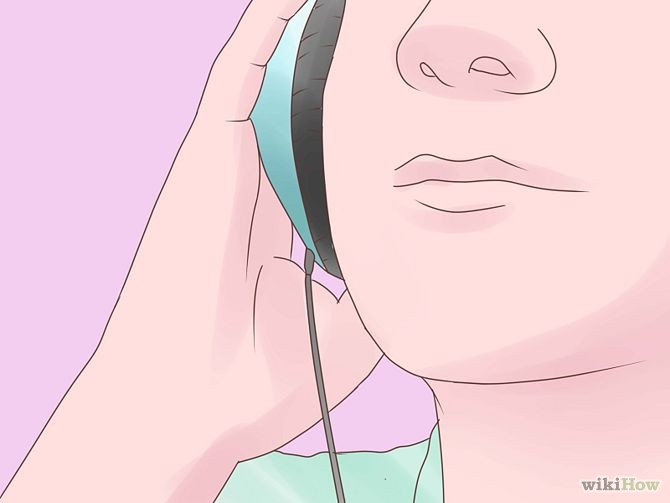
1. Listen to lots of rap
If you want to rap, you've got to immerse yourself in the culture and the sounds of hip-hop and rap music. It's a style of music deeply ingrained in city life and culture. Find an artist you like and trace their influences back to get some sense of the foundation of hip-hop and develop your knowledge of the style. Listen to popular rap artists, listen to underground artists, listen to old-school rappers, listen to Nas.
- Listen to the music of different regions: listen to New York-style "boom-bap" hip-hop, West Coast gangsta rap, Dirty South chopped-and-screwed rap, and also the hip-hop of the underground. Listen to the music in your region.
- Contemporary rap music is linked to mixtape culture.[1] An online version of the old-school mixtapes is available at record stores, most rappers album-quality material is available for free download as a promotional tactic. Check out your favorite rapper's mixtapes and branch out. It's free, so you can listen to stuff you might not even like and form an opinion about it.
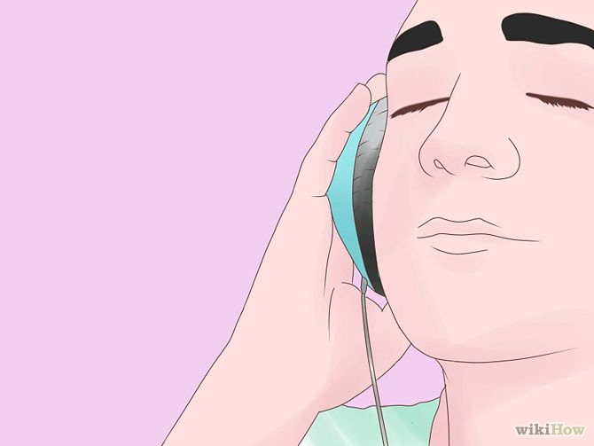
2. Get rhythm
Rapping is about more than saying something that rhymes. If you want to rap, you'll have to get a feel for the music in your bones. If your brain and body are not conscious and in tune with the beat, your rap will feel stiff and unnatural.
- When you listen to some rap that you like, try to ignore the words. Just listen to the instrumental, and how the flow of the words seems to fit into the beat.
- Consider beatboxing as a tool to learning rhythm - not only will this help you understand rhythm, but it will be a useful technique once you start rapping yourself.
3. Rap along
Memorize the words to your favorite rap song and rap along in your ear buds, in your stereo, in your car, etc. Do it loud, and do it with confidence! Try to rap along until you have every word memorized and (more importantly) you can hit all the beats correctly.
- See if you can find the instrumental track of the rap song that you've got memorized. If not, find one that's similar. You can download from many places online. Practice the verses you've memorized over the instrumental beat. Again, do your best to stay on-beat. This will help you learn how to keep a rhythm and tempo
- Once you're able to perform the rap song that you've memorized fairly consistently over the instrumental beat, try to adapt it to another beat. Pick one with a different sound and possibly a different tempo. Again, you can find rap beats online in many places. The point here is that you are working on becoming adaptive to the music that you are rapping on.
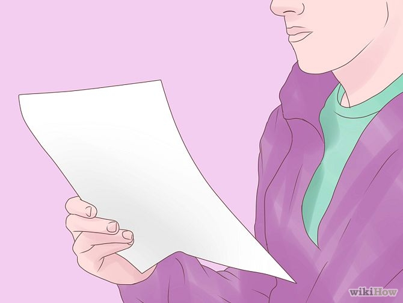
4. Rap a Capella
Once you have mastered rapping along to a beat, trying rapping the song completely by yourself. If you can do this correctly for many songs, it's safe to say you've mastered rhythm and staying on-beat
- Practice by just reading the lyrics. Then, read the lyrics like you're trying to get a raise from your boss. Try to get it on the beat. Imagine when you are rapping that you are doing it in front of someone you know well and respect. Don't try to make your voice sound like someone you're not. Relax.
Part 2 of 3: Developing Your Own Style
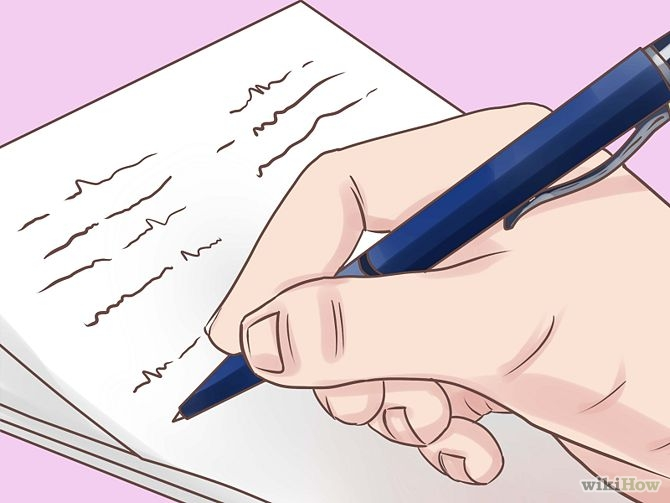
5. Write some lyrics
Once you feel comfortable rapping on different beats, start to make up rhymes of your own. No need to worry about what you are rapping about, just pick out things that you see around you.
- Write at least 10 rhymes a day. Even if you don't like what you've written, later on you could come back and re-word those rhymes into something you do like. When you finally like what you're hearing, test them in front of your friends and see what they think. Get a rhyming dictionary to help improve your rhymes, and try to develop your vocabulary by reading as much as you can.
- Depending on who you're influenced by, the content of rap songs can differ greatly. Every Lil Wayne song is basically one-liners about the greatness that is Weezy F. Baby, while a rapper like Raekwon will tell complicated stories with peppered with flights of sonic wordplay. Try different things and see what feels natural.
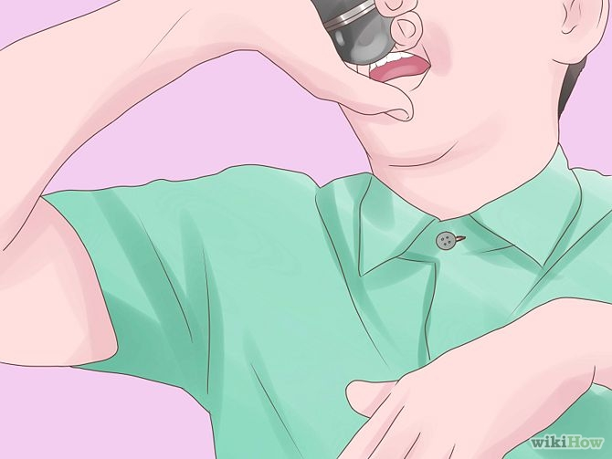
6. Rap constantly
GZA said that "Wu-Tang" stood for "Witty Unpredictable Talent and Natural Game," which is as good a description of any as what it is we're looking for in good rap music. To make it second-nature, you've got to rap all the time. Listen to rap as much as you can, analyze it, and draw inspiration from everything. Successful rapping takes hours and hours of practice, so you should do whatever you can whenever you can.
Make a rap journal. Keep track of your raps, and practice them out of the journal. Carry it everywhere so that when inspiration strikes, you have a place to write your thoughts down.
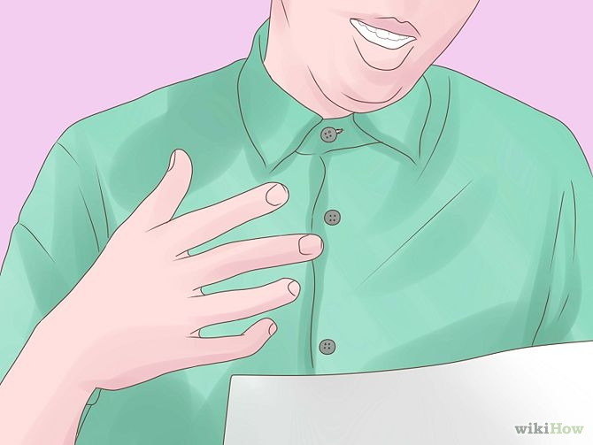
7. Learn how to rap effectively
Beyond good lyrics and attention to rhythm, there are a few techniques you can use to be better understood and get your message across
- Stress the consonants. If you try to rap the way you talk, it won't be comprehensible.
- Keep your words clear. Pay attention to keeping your words sharp.
- Rhythm is more important than rhyme. Don't stumble or stop if your freestyle doesn't rhyme—just stay on-beat and everything will be fine.
- Be able to think about your next line while still giving 100% to the line you're currently rapping
- Be loud! While being too loud is never a good thing, it's important to both literally and metaphorically be heard.
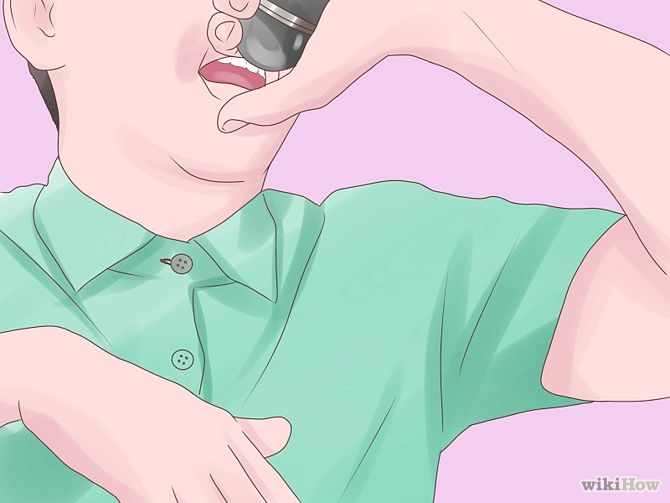
8. Be real
Even though it's tempting to emulate your favorites, it'll be hard to rap about your global cocaine empire if you're a teenager from the suburbs. You don't necessarily have to tell "the truth" 100% of the time, but you do have to be real and be believable.
- Figure out what's unique about you, and what you bring to the table of rap. You don't need to have an ingenious or cookie-cutter answer to this question, but don't try to be just like another rapper, even if they're one of the best. In order to do well, you will need to introduce something fresh to the industry.
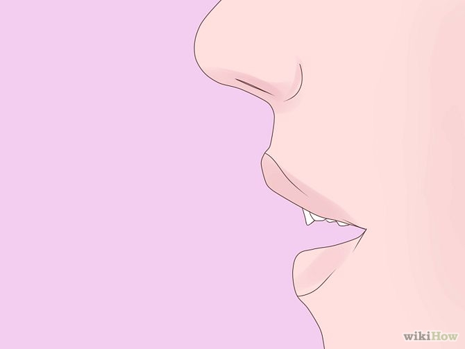
9. Try to freestyle
Poet Allen Ginsberg once said, "First thought, best thought." Start with a line you've already written and then go straight off the dome: if you're becoming proficient at rhyming quickly, doing it on the fly can be a way to open up your skills and surprise yourself with what you come up with.
- Supposedly Lil Wayne never writes rhymes and just raps this way, by listening to the beat and diving right in.
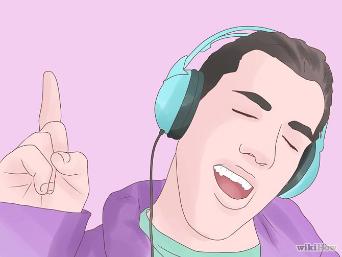
10. Make your own beats
To make truly original music, start developing your own beats to work with. This will free you up to make the kinds of beats you want to make, use the kinds of samples and sounds you like, and surprise people with completely original sounds.
- Alternatively, you can hook up with a producer who's eager to share beats. It could lead to a fruitful relationship.
Part 3 of 3: Taking the Next Steps
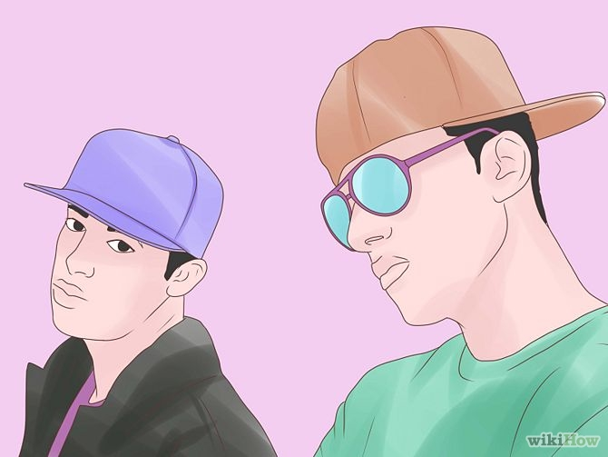
11. Rap with buddies
Find some people who like to rap also and take turns making raps together. It's easier to get creative when you can get inspired and feed off of somebody else's flow. Give yourselves aliases and adopt a crew name. The Wu-Tang Clan did this to showcase individual talents and share resources.
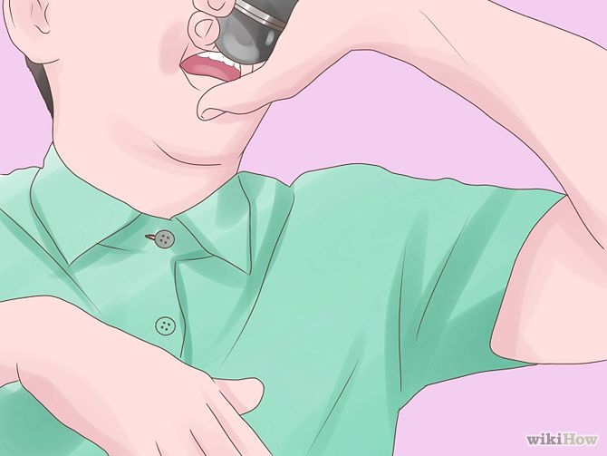
12. Perform
Be proactive about finding gigs and showing yourself off. Start small—perform to little groups of your peers and get feedback. When you feel comfortable with that, start looking around for open mics where you can perform.
- Freestyle battles are a unique opportunity in hip-hop and can be a good way of making connections, but only if you've really honed your freestyle skills and are familiar with the conventions of a freestyle battle. It can seem confrontational and mean, since it involves lots of crude disses, so go check some out before you decide to sign up.
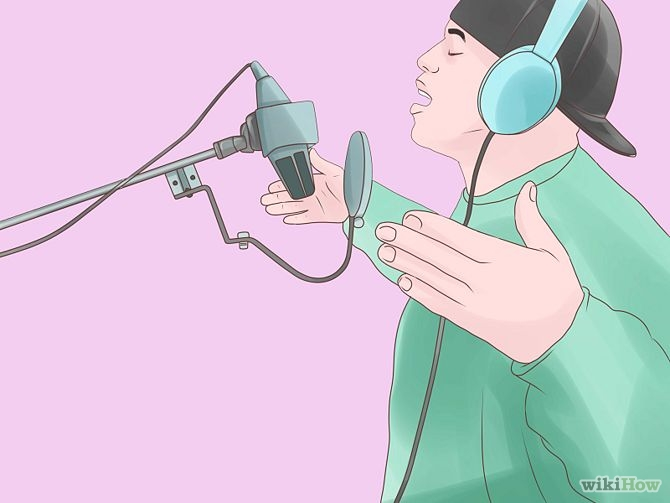
13. Record your raps
Hook up with a producer or another rapper who's got some recording equipment and get yourself recorded. With original beats, write new rhymes and keep the best of it. Be judicious in deciding--it can be tempting to like the first stuff you make too much, because it sounds "real." Make sure it's something you'll actually enjoy listening to.
- Try recording yourself. Increasingly, the recording technology on home computers and telephones is high quality. It's always better to use real equipment, but in the beginning do it yourself.
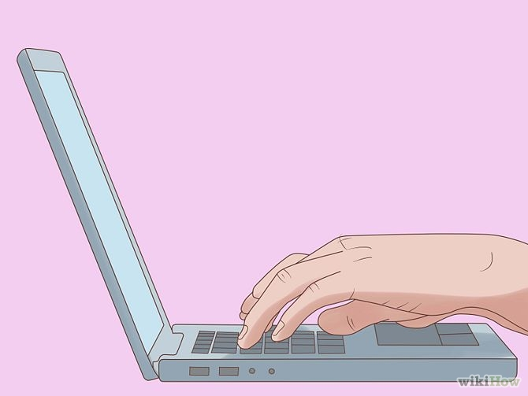
14. Put your music on the Internet
Once you've got some good recordings of yourself rapping, start to cultivate an online presence for your music. Start a YouTube channel for your music and try to get a mixtape released. Put it out there for free and see what happens. Chicago rapper Chief Keef signed a several-million dollar deal based on the strength of a single mixtape and a few YouTube videos that had become very popular.